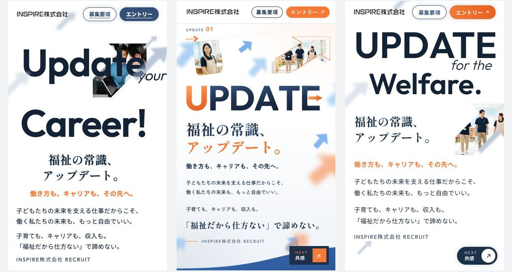
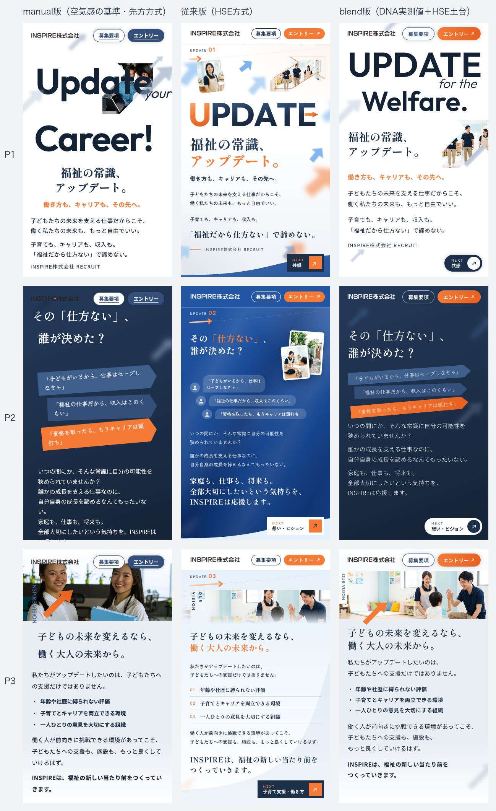

1 / 16
株式会社SPINOVA 御中 ／ 株式会社HSE ／ 2026年10月
LP制作スキーム改善のご提案
本日の位置づけ：先日いただいた課題（CSSの肥大化・スワイプのガクつき）と制作の標準化について、弊社の推測も含めて調査した内容です。改善は段階を踏んで進めるもので、本日は改善の土台をご提案します。実案件でテストしながら改善を重ねることで、全制作者の再現性が上がり、品質を一定に保てる見込みです。本日の主な目的は、ヒアリングとすり合わせです。
良い所参考サイトの空気感を数分でそろえる速さ。デザインDNA解析。ヘッダー・フォームの具体的な品質基準
課題品質を人の目と判断に頼り、毎回0から作るため、作る人によってばらつきとエラーが出る
ご提案良い所はそのまま残し、学びを「積み上げる」仕組み（固定の土台・検査の道具・直せる形）を足す
実証同じ素材で3つの作り方を比較し、新しいスキームが雰囲気・CSSの整理とも最も良い結果だった（11画面目）
本日の流れ
- 今回行ったこと（2）
- 課題の原因と不具合の記録（4〜8）
- 現行とHSEの手順の強みと弱み（9）
- 新しいスキームと、試した結果（10〜11）
- 制作キットと、導入の形・改善を回す体制（12〜15）
- ご相談したいこと（16）
- 参考資料：修正チェックリスト（17）
矢印キー・スペースで進みます。（？）を押すと補足が開きます。
2今回の調査・検証の内容
まず、評価いただいている弊社の制作物について、どの部分が優れているのか、また貴社の現行のスキームとどこに親和性があるのかの分析から始めました。そのうえで、共有いただいたコードと弊社の制作物を使い、以下の6点を行いました。
1実例4サイトのコードを計測
共有いただいた4サイトを同じ方法で測り、直しても画面が変わらない行・色・文言の置き場所・スワイプの作りを比べた
→ 直しても画面が変わらない行が30〜282件、スワイプは4つとも別実装（5〜8画面）
2現行マニュアルを工程ごとに比較
「10月最新版 LP量産マニュアル」を読み、HSEの手順と工程ごとに並べた
→ 残すべき強みと、変えるべき所を整理（9〜10画面）
3弊社のサイトを整理して前後比較
PELLICULE様のサイトのCSSを、見た目を変えずに整理。9サイズ×12ページで見た目が同じことを確認
→ 直しても画面が変わらない行281件→0件、色の変更は1行に（6画面）
43つの作り方で同じページを試作
INSPIRE様の案件で、同じ素材から現行・HSE従来・新しいスキームの3通りを作って比べた
→ 新しいスキームが、雰囲気・CSSの整理とも最も良い結果（11画面）
5検査の道具を2つ作成
CSSの散らかりを数える道具と、1画面に収まるかを6サイズで測る道具を作り、6サイトで実行
→ 結果の例（12画面）
6編集マニュアルの見本を作成
PELLICULE様のサイトに、文言73か所・画像34か所の目印を付け、文字数の上限を実測して手順書に
→ 見本へのリンクあり（12画面）
3現行マニュアルとご提案の違い
いまのマニュアル
使い切り
案件1ミスA・B
→案件2ミスA・B
→案件3ミスA・B
毎回0から作るので、前の失敗が残らず、同じミスが人と案件を変えて繰り返される
ご提案
積み上げ
案件1ミスA・B → 記録
→案件2ミスA・Bは発生しない
→案件3既知のミスは発生しない
失敗の原因と対処を、土台と道具に反映する。一度起きたミスは、次から誰が作っても起きない
いま、学びが溜まる場所プロンプトの長文
失敗のたびに注意書きを足す。ヘッダーのボタン2つの余白だけで数千字。長いほどAIは読み落とし、効くかどうかがAI次第になる
ご提案の、学びの置き場所土台のコード・検査の道具・ルール文書
ミスの原因と対処を、コードと道具に反映する。読み落としが起きないので、人やAIが変わっても同じ結果になる
43つの課題と主な原因
課題1文言・色を自分で直せない
文言や色を変えたくても、どこを触ればいいか分からず、修正依頼になる
課題2スワイプの不具合
スワイプの不具合が、サイトごとに違う形で出る
課題3品質のばらつき
作る人やAIによって、品質が変わる
原因：学びが「プロンプトの長文」にしか残らず、毎回ちがうコードに0から当てている。そのため、結果が人とAIの解釈次第になる。
品質がぶれる3つの要因
1 指示する人同じことを頼んでも、言葉の選び方や、どこまで書くかが人によって違う
2 AIのモデル・版同じプロンプトでも解釈が変わる。同じモデルでも出力は毎回揺れる
3 出発点のコード（いちばん大きい）複製から始めるので土台が毎回ちがう。1と2はAIで量産する以上残るので、3を固定するのがいちばん効く
5実例4サイトの調査結果
| ASAHI RISE CARE様 | 甲府システム様 | 光伸テクニカル様 | 東海メンテナンス様 |
|---|
| 直しても画面が変わらない行 | 30件 | 105件 | 282件 | 56件 |
| 文言の置き場所 | HTMLに直接 | HTMLに直接 | JSONから生成 | プログラムの中 |
| メイン色の変更 | 5〜20か所。変数があっても直書きが残り、SVG画像にも焼き込まれている |
「直しても画面が変わらない行」の例（甲府システム様）
.beginner-content { padding: 32px 18px 36px; } 120行目
.beginner-content { padding: 18px 18px 22px; } 184行目
.beginner-content { padding: 0; } 357行目 ← 有効
後から書いた行が優先されるので、前の行は上書きされて使われていない。そこを直しても画面は変わらない
色が1か所で変わらない例（甲府システム様）
--yellow: var(--base); ← 名前は黄・青・緑なのに
--blue: var(--base); 中身はすべて同じ赤
background: #EA2833 …; ← 変数があるのに直書き
<rect fill="#EA2833" /> ← SVG画像にも
メイン色の変更に計11か所（SVG画像4ファイルを含む）
6CSSの量と散らかり（弊社サイトでの検証）
量（豊かさ）行数・ファイルの大きさ。ページ数・動き・要件で決まる。質の高い動きを作れば当然増える。悪ではない
散らかり直すときの迷いやすさ。直しても画面が変わらない行・試作の残り・色の直書き。1つ直すとき何か所を見るかで測る
| PELLICULE様のサイト（HSE制作） | 整理前 | 整理後 |
|---|
| 直しても画面が変わらない行 | 281件 | 0件 |
| メイン色を変えるときに直す場所 | 30か所 | 1行 |
| CSSの行数（量） | 1,512行 | 979行 |
整理で何を変えたか（メインの色）
/* 整理前：変数＋直書き9か所＋SVG 6か所＋JS 2か所 */
rgb(5 99 174 / 0.35); <path fill="#0563ae" />
/* 整理後：この1行で全部が連動 */
--blue-rgb: 5 99 174;
rgb(var(--blue-rgb) / 0.35); fill:var(--color-blue)
弊社のサイトも、修正のたびに末尾へ書き足した結果、同様に散らかっていました。原因は作り手ではなく、修正の進め方にあります。
7スワイプの不具合の原因
| ASAHI RISE CARE様 | 甲府システム様 | 光伸テクニカル様 | 東海メンテナンス様 | HSEのサイト |
|---|
| 動かし方 | JS 0.48秒 | JS 0.42秒 | JS 0.36秒 | JS 0.42秒 | ブラウザ標準（ホイールのみJS） |
| 次の操作の受付 | 完了か1.8秒 | 完了＋0.9秒 | 停止位置の実測 | 完了か1.2秒 | 0.95秒の固定 |
| 1画面への収め方 | JSで文字を縮小 | JSで全体を縮小 | JSで3系統の縮小 | CSSで固定 | CSSで段階的に |
| 位置の補正 | 多い | 13か所 | 多い | 多い | なし |
1 操作の判定が経験則慣性で2ページ進む・次の操作が無視される誤判定が起き得る
2 位置の補正が多いアドレスバーの伸縮などのたびに補正が走り、ずれや跳ねになる
3 縮小の計算が連鎖縮小 → 高さが変わる → スワイプ側が再計算、の繰り返し
元請け様の調査（10月13日）：JSとCSSのスワイプが二重に効くケースがあり、CSSのみで正常に動いた。WordPressのプラグインで組み込んだLPに多い。
対策：動きはCSSのスナップに一本化し、JSは位置を動かさない（PCのホイールを1ページずつ送る補助のみ）。この1つの実装を土台に固定し、全案件で使います。
スワイプは毎回AIが書き直しているため、不具合もサイトごとに異なります。HSEのサイトにも「トラックパッドの慣性が長いと2ページ進む可能性」が残ります。どれも iPhone Safari・トラックパッドの実機での検証はこれからです。
8実例サイトでの不具合の記録
| サイト | スワイプの不具合（制作時の記録） | CSS | 記録上の状態 |
|---|
| 甲府システム様 | 募集要項の最下部で指を戻すとエントリーへ移動／iPhone系の初回表示でヘッダーが528pxに拡大し位置が崩れる／移動中に二重に動く | 未使用の削除（816ファイル、セレクター151件） | 修正済み。ただし「実機での最終確認が必要」 |
| 光伸テクニカル様 | 慣性の直後に逆方向へ操作すると動かない／長い文の中から戻ると複数画面さかのぼる／移動が終わっても操作を受け付けない | 未使用の削除（セレクター2,380件）。!important 30件 | 修正済み。ただし「実機のかくつきそのものは未再現」 |
| 東海メンテナンス様 | ボタンの上で縦スワイプが動かない／慣性直後の反転を無視／フォームから戻ると複数画面さかのぼる／動画から1画面目で80px跳ねる | 未使用の削除（セレクター1,457件、約55MB） | 修正済み。ただし一部の症状は再現できず |
| ASAHI RISE CARE様 | 記録なし（コード内にSafari向けの対策のみ） | CSSを14ファイルに分割。修正ごとに版番号を付けた跡 | 記録がなく判断できない |
トライアル案件でのご報告
スマホで、下方向は正常だが、上方向はスワイプではなく通常のスクロールになる。制作者の環境・別のMac miniでは再現せず、修正版で解消。
共通点：いずれも制作後に、録画やスマホでの確認で見つかった不具合で、制作者の環境では再現しないものも含まれます。どのサイトも、iPhone Safari・トラックパッドの実機では確認されていません。
9現行の手順とHSEの手順の比較
現行の手順
- 参考サイトを丸ごと複製
- デザインDNAを解析
- プロンプトで機能を重ねる
- 目視で微修正・照合して完成
強み空気感が数分でそろう。DNA解析。ヘッダー・フォームの具体的な基準
弱み人の目と判断に頼る。毎回0から作る。CSSが散らかる
HSEの手順
- 原稿を「確定・解釈・未定」に整理
- 参考サイトを画面で分析（コードは持ち込まない）
- 固定の土台から作る。AIは中身と差分だけ
- 機械で検査（文言・収まり・はみ出し）→ 確認 → 公開
強み正確さ（文言を機械で照合）・安定（同じスワイプ部品）・直しやすさ（色の変更が1行）
弱み参考サイトの空気感が抜けやすい。初稿で指摘を受け、作り直したことがある
両方の強みを組み合わせた手順を、次の画面でご提案します。
10新しい制作スキーム（案）
| 工程 | 現行から残す | HSEから入れる | 新しいやり方 |
|---|
| 要件 | ― | 確定・解釈・未定の整理 | 原稿を書き出し、読み落としを先につぶす |
| 参考 | 複製・デザインDNA解析 | 素材を持ち込まない | 複製は分析専用の場所だけ。色・文字・動きの実測値を取り出す |
| 土台 | ― | 固定のスワイプ・骨格 | 土台に、実測値を流し込む |
| 構成 | 元サイトの語彙だけで表現 | ― | 初稿は参考に忠実に。独自の演出は2稿目から |
| 修正 | 音声入力の微修正 | 元の場所を直す・検査 | 修正のたびに、散らかりを数値で確認 |
| 納品 | ヘッダー等の基準・目視確認 | 文言照合・収まり検査・整理 | 全部通ったら納品。編集の目印を付けて渡す |
参考サイトの複製は、分析用として残す
空気感を速くそろえる点は、現行の手順のほうが優れていました。複製は分析専用の場所でだけ行い、見た目を決めている数値を取り出します。
コードと素材は制作物に持ち込まない
取り出すのは数値だけなので、散らかりは土台に入らず、参考サイトの写真やロゴが制作データに残る心配もなくなります。
113つの作り方の比較検証（INSPIRE様の案件）

現行の手順（複製）HSEの従来の手順新しいスキーム
| 現行 | HSE従来 | 新方式 |
|---|
| 雰囲気の近さ | 基準 | 0.16〜0.87 | 0.86〜0.96 |
| 直しても画面が変わらない行 | 37件 | 361件 | 0件 |
| 色の直書き | 102件 | 200件 | 0件 |
| 5サイズの収まり | はみ出しあり | OK | OK |
| 他社の素材 | あり | なし | なし |
参考サイトから取り出した数値
- 色の配分：白84%・濃紺6%・オレンジ1%
- 大きな英字は本文の約6倍、行間0.9
- 本文15px・字間0.03em・行間1.75〜2.0
- 線・影・角丸は使わない
- 動き：下から48px・0.6秒・0.12秒刻み
INSPIRE様の案件・最初の3ページで比較。雰囲気の近さは、現行の版との色の重なり（1が同じ）。実機での確認はこれからです。
12制作キットの構成
土台キットスワイプ・骨格・ヘッダー・フォームを固定。AIが触るのは中身とページ固有の見た目だけ
検査の道具文言の照合・1画面の収まり・散らかりを数値で判定。全部通ったら納品
直せる形色は設定ファイルの1か所。文言と写真には番号と文字数の上限。編集マニュアル付き
修正で得た知見の反映先（3段階）
1 文章のルール「句読点を行頭に置かない」と書く → 読み落とすと守られない
2 検査の道具行頭の句読点を自動で見つける → 納品前に止まる
3 土台のコード行頭に送らない処理を土台に入れる → 発生しなくなる
検査の道具の結果の例
■ CSS散らかりチェック
直しても画面が変わらない行：281 ⚠ 増えました
.shot__stage の height：581行 → 712行
→ 726行 → 728行（最後が有効）
■ 1画面の収まり（6サイズ）
p1 390x540 ⚠ NEXTまで3.8px
判定：要確認
行数（量）は警告しない。散らかりが増えたときだけ止まる
13期待できる効果と進め方
| 項目 | いま | 導入後 |
|---|
| 色・文言の修正 | どこを触るか分からず、依頼になる | 番号と文字数の目安を見て、自分で直せる |
| スワイプ | 案件ごとに実装し、不具合も案件ごと | 一度の実装で、全案件が同じ動き |
| 品質の確認 | 目視とAIの「確認しました」 | 数値で合否が決まる |
| 同じミス | 担当者と案件を変えて繰り返す | キットに反映した後は、全員の制作で発生しない |
| 新しいメンバー | 勘と試行回数に左右される | 参加した時点から、同じ手順と基準で作業できる |
マニュアルを、AIが読む短いルール文書に整理
土台キットと検査の道具を、1案件で試験導入（WordPressへの組み込みと、元請け様の環境での確認まで）
制作メンバー2〜3名で試用し、つまずきを反映
報告とSlack・制作履歴から不具合を集め、管理者がスキームを更新して共有し続ける
まず1案件で試験導入し、制作時間・修正回数・散らかり・収まりを計測したうえで、対象を広げます。弊社はWordPressへの導入実績がまだないため、実案件で組み込みまで行い、組み込み時に起きる不具合の原因を特定します。
14導入時の構成と、AI環境ごとの対応範囲
メンバー（Codex）
キットのフォルダで作業。AGENTS.md を自動で読む
⇄
制作キット（1つのフォルダ）
- ルール文書：手順・落とし穴・禁止事項（現行マニュアルの良い所も含む）
- 土台：スワイプ・骨格・色の変数
- 検査の道具：文言・収まり・散らかり
- 見本：合格した制作物と編集マニュアル
⇄
メンバー（Claude Code）
同じフォルダで作業。CLAUDE.md（同じ内容）を自動で読む
使えるAIの環境ごとにできること
土台に中身を流し込み、見た目を少し足す。確認はチェックリストと目視
課題1・2は解消
段階1に加え、要件整理と参考サイトの分析を対話で行う
初稿の方向ずれが減る
段階2に加え、画面を実測しながら直し、検査を通して公開まで
HSEと同じ品質
15スキームの改善を回す体制
スキームは一度で完成するものではないため、制作者の声を集めて改善し続ける役割を置きます。
一度で完璧なスキームはできません。管理責任者を1人置き、制作者の疑問や要望を吸い上げて、都度キットに反映して全員へ展開します。反映する人を1人に絞ることで、ルール同士の食い違いも防げます。
16ご相談事項
1 よく変更される場所（何を・誰が・どれくらいの頻度で直したいか）
2 納品済みサイトのコードのご共有（土台キットの設計の参考にします）
3 試験導入する案件の選定と、期間のすり合わせ
4 取り組みの範囲・成果物・条件の取り決め
5 制作に使うAIサービスと、情報の取り扱いのルールの確認
本日ご判断いただきたいこと
1案件での試験導入の可否
実施の場合は、対象案件と期間をご相談させてください。
株式会社HSE ／ 数値はすべて、共有いただいたコードと弊社の制作物を同じ方法で測ったものです。iPhone Safari とトラックパッドの実機での確認はこれからです。
17参考資料：修正チェックリスト（草案）
品質チェックのチャンネルで過去1か月（9月13日〜10月12日）に出された修正依頼を整理し、提出前に確認する36項目にまとめました。
| くり返し出ている指摘 | 回数（目安） |
|---|
| 1回の操作で、1セクションだけ進むか | 約11回 |
| 枠の内側・リスト・セクションの上下の余白 | 約8回 |
| ヘッダーのボタンの内側の余白 | 約7回 |
| PC全体の背景が単調すぎないか | 約7回 |
| 同じ型のレイアウトが続いていないか | 約6回 |
| 最小の文字が13px以上か | 6回 |
使い方
提出前に上から確認し、チェックを入れていきます。くり返し出ている項目から確認すると、手戻りが減ります。
検査の道具との関係
最小の文字サイズ・見切れ・重なり・入力欄のはみ出しなど8項目は、検査の道具に組み込めば自動で判定できる見込みです。
- 長い指示ほど、AIは読み落とします。失敗のたびに注意書きを足す運用だと、ヘッダーのボタン2つの余白だけで数千字の指示になります。
- 毎回ちがうコードに当てるので、効き方がばらつきます。同じプロンプトでも、出発点のコードが違えば結果が変わります。
- 解析結果（デザインDNA）が会話の中にしか残りません。次の作業や次の担当者に引き継がれません。
学んでいないのではなく、学びの置き場所の問題です。
1 指示する人
同じことを頼んでも、言葉の選び方や、どこまで書くかが人によって違う
2 AIのモデル・版
同じプロンプトでも解釈が変わる。同じモデルでも出力は毎回揺れる
3 出発点のコード（いちばん大きい）
参考サイトの複製から始めるので、土台が毎回ちがう。実例4サイトのスワイプが全部別物だったのは主にこのため
1と2はAIで量産する以上残ります。だから、3の出発点を固定するのがいちばん効きます。
CSSは後に書いた指定が優先されます。前の行を直しても画面は変わらず、直す人は最後まで読んで効いている行を探すことになります。
例：甲府システム様（カードの内側余白）
/* 120行目 */
.beginner-content { padding: 32px 18px 36px; }
/* 184行目 */
.beginner-content { padding: 18px 18px 22px; }
/* 357行目 */
.beginner-content { padding: 0; } ← これだけが効いている
3回書き換えて、最後は0に戻しています。カード側は別の行で改めて余白を付けています。
甲府システム様
:root {
--base: #EA2833;
--yellow: var(--base); ← 名前は黄・青・緑なのに
--blue: var(--base); 中身はすべて同じ赤
--green: var(--base);
}
/* 変数があるのに直書き */
background: #EA2833 url(…svg);
/* SVG画像の中にも */
<rect fill="#EA2833" />
メイン色を変えるには、変数1か所に加えて、CSSの直書き3か所、SVG画像4ファイル（計11か所）を直す必要があります。
| サイト | 置き場所 | 直すときの壁 |
|---|
| A・B | HTMLに直接 | 同じ文言が何度も出る（社名16回など） |
| B | HTML＋控えのJSON | JSONを直しても画面に反映されない（二重管理） |
| C | JSON → プログラムで生成 | 作り直さないと反映されない。HTMLを直すと次の生成で消える |
| D | プログラムのコードの中 | プログラムを直す必要がある |
ご提案では、文言はHTMLに置いたまま、触ってよい所に番号と文字数の上限を付けます（別ファイルに移すと、作り直しや二重管理が必要になるため）。
検査の道具（check_css.py）で、各サイトで実際に読み込まれるCSSだけを、同じ方法で数えました。「直しても画面が変わらない行」は、同じ画面条件の中で、同じ部品の同じ項目が2回目以降に出てくる数です。
| サイト | CSS | 行数 | 直しても画面が変わらない行 | @media | !important | 直書きの色（CSS／HTML／JS） |
|---|
| ASAHI RISE CARE様 | 14本 | 583 | 30 | 9 | 0 | 53／0／0 |
| 甲府システム様 | 1本 | 1,205 | 105 | 36 | 3 | 42／4／0 |
| 光伸テクニカル様 | 1本 | 1,617 | 282 | 1 | 15 | 23／0／0 |
| 東海メンテナンス様 | 1本 | 7,568 | 56 | 48 | 5 | 91／0／0 |
| PELLICULE 整理前 | 2本 | 1,512 | 281 | 60 | 48 | 165／65／10 |
| PELLICULE 整理後 | 2本 | 979 | 0 | 32 | 19 | 0／0／0 |
光伸テクニカル様はビルド後の1本を数えています。東海メンテナンス様の行数のうち約6,100行はフォントの定義です。行数は量の目安で、良し悪しの判断には使っていません。
1ページ目の写真の幅
/* 整理前：7つのまとまりに8か所 */
.orb__c { width: 6.4em; } /* 581行目 */
.orb__c { width: 9em; } /* 660行目 修正指示の追記 */
/* 711・716・726・752行目にも */
/* 整理後：1ページ目の節（297〜384行）の中だけ */
.orb__c { … }
@media (max-height: 740px) { … }
@media (max-height: 600px) { … }
メインの色
/* 整理前：変数＋半透明の直書き9か所＋SVG 6か所＋JS 2か所 */
rgb(5 99 174 / 0.35); <path fill="#0563ae" />
/* 整理後：1行で全部が連動 */
--blue-rgb: 5 99 174;
rgb(var(--blue-rgb) / 0.35); <path style="fill:var(--color-blue)" />
ほかに、使っていない試作の指定を削除し、日付順の追記をページ順に並べ替え、冒頭に目次を付けました。
- 整理前と整理後で、全ページのすべての要素の見た目の値（計算後のスタイル）を、9つの画面サイズ×12ページで比べ、見た目に影響する差は0件でした。
- 操作した状態（タブの切り替え、入力漏れ、ホバーなど）と、動きを減らす設定でも比べています。
- 画面に出る文字（2,677字）も、整理前後で一致しています。
確認はChromeで行いました。iPhone Safari の実機はこれからです。
今回は、19回分の追記を畳み込み、見た目が変わらないことを全数で確かめるまで、約2時間かかりました。
積み上がってから片付けるのは手間がかかります。そのため、日頃は「末尾に足さず、効いている行を直す」「修正のたびに検査の道具で散らかりの増加を確かめる」の2つで積み上げないようにし、整理は納品前などの節目だけにすることをおすすめします。
| 甲府システム様 | PELLICULE様のサイト（HSE） |
|---|
| 動かし方 | JSで位置を書き換えて動かす（0.42秒） | ブラウザ標準のスナップ機能 |
| 位置を補正する処理 | 13か所（画面サイズ・アドレスバー・フォント読み込みなど） | 補正なし |
| 1画面に収める方法 | JSで全体を縮小 | CSSのみ（画面の高さに合わせて段階的に詰める） |
| 注意点 | 補正と縮小が重なり、移動中や停止直後に跳ねやすい | トラックパッドの慣性が長いと2ページ進む可能性がある |
どちらも、iPhone Safari とトラックパッドの実機ではまだ確かめていません。土台キットに入れる前に、実機で検証します。
現行の手順
- 参考サイトを丸ごと複製（Claude Code）
- デザインDNAを解析（Codex）
- プロンプトで機能を重ねる（スワイプ化・ヘッダー・フォーム・動き）
- 目視で微修正（人）
- 原稿と目視で照合して完成（人）
土台＝参考サイトのコード（毎回ちがう）／品質の物差し＝人の目
HSEの手順
- 原稿を「確定・解釈・未定」に整理
- 参考サイトを画面で分析（コードは持ち込まない）
- 固定の土台から作る。AIは中身とページ固有の見た目だけ
- 機械で検査（文言の照合・収まり・はみ出し）
- 確認用URLで確認 → 修正 → 公開
- 落とし穴を記録し、次の案件へ
土台＝毎回同じ検証済みの部品／品質の物差し＝数値
| 起きやすいこと | HSEのやり方 | 裏付け |
|---|
| 文言の取りこぼし | 原稿と画面の文字を、機械で1字ずつ照合 | 12ページ全文の一致を機械で確認 |
| 収まり・はみ出し | 6つの画面サイズで、収まりとはみ出しを数値で検査 | 全ページで、ボタンとの隙間まで実測して納品 |
| スワイプのぶれ | 同じスワイプの部品を、案件をまたいで使い回す | 4案件で同じ部品 |
| 直しにくさ | 色は変数1か所。元の場所を直し、節目に整理 | 整理後はメイン色の変更が1行、直しても画面が変わらない行が0件 |
| 原稿の読み落とし | 原稿を「確定・解釈・未定」に分けてから着手 | 方向の手戻りが続いた反省から導入 |
トライアル2件でOKをいただき、本契約に至りました。強みは見た目のセンスより、間違いが起きにくい仕組みの側にあります。
空気感が速くそろう
参考サイトから、色・角丸・影・動きの周期まで実測値で取れる
デザインDNA解析
「情報 → 表現」の変換ルールまで出す。HSEの分析より情報量が多い
具体的な品質基準
ヘッダー13px・間8px、送信ボタンは「送信する」など。そのまま検査項目にできる
仕上げの経験則
垢抜けない時の4つの対処、背景が寂しくないかの確認、WordPress化の手順
残すのは「何を作るか」を決める知恵、変えるのは「どう作るか」の部分です。
参考サイトの空気感を短時間でそろえる点は、現行の手順のほうが優れていました。HSEの手順は参考サイトを「見て」組み直すため、色・角丸・影・動きの周期といった細かな値が落ちやすく、初稿で作り直したこともあります。
そこで、複製は分析専用の場所でだけ行い、細かな値を実測して取り出します。取り出すのは数値だけで、コードと素材は納品物に持ち込みません。これで、空気感をそろえたまま、散らかりと権利の心配をなくします。
現行の手順では、参考サイトの写真・ロゴ・イラストなどの画像も一度ダウンロードします。納品前に差し替える運用でも、制作途中のデータに他社の素材が残ります。
ご提案では、参考サイトは分析だけに使い、コードと素材は持ち込みません。借りるのは、見せ方の数値とルール（デザインDNA）だけです。
権利の判断は専門家への確認をおすすめします。本提案は、そもそも複製物を納品物に持ち込まない形にすることで、判断が要らない状態を目指します。

左：現行の手順（複製）／中：HSEの従来の手順／右：新しいスキーム。画面の大きさは390×664。
分析専用の複製から、見た目を決めている数値だけを取り出し、HSEの土台に流し込みました。効いたのは次の5つです。
- 色の配分：白が約84%、濃紺が約6%、オレンジは約1%。濃い面はネイビーのグラデーション
- 大きな英字：本文の約6倍の大きさ、字間を少し詰め、行間0.9
- 本文：細めのゴシック、15px、字間0.03em、行間1.75〜2.0
- 線・影・角丸を使わない：ボタンだけ完全な丸みと弱い影
- 旗と手書きの声：右端を矢印の形に切った帯に手書き書体、傾きは-2〜-5°。動きは下から48px・0.6秒・0.12秒刻み
いま：LPごとに全部を作り直す
スワイプの仕組み … 毎回AIが生成
土台のCSS（骨格・文字・余白）… 毎回AIが生成
ページごとの見た目 … 毎回AIが生成
中身（文言・写真）
生成のたびに書き方が揺れ、上書きが積み重なる。スワイプの細部が毎回抜け落ちる
ご提案：固定の土台＋AIは中身だけ
スワイプの仕組み … 検証済みの固定部品
土台のCSS（色の変数・文字の比率・余白）… 固定
ページごとの見た目 … 実測値に沿って少しだけ足す
中身（文言・写真）… AIが流し込み、機械で照合
AIが触る範囲が狭いので、散らからず、スワイプも毎回同じ動きになる
| 内容 | タイミング | 現行マニュアル | 反映案 |
|---|
| 末尾に足さず、効いている行を直す | 修正のたび | ヘッダーの節にのみ「原因の指定だけ直す」の記載あり | 全工程の共通ルールにする |
| 検査の道具で散らかりの増加を確かめる | 修正のたび | なし（目視の確認） | 数字で判定する |
| 見た目を変えずにまとめて整理 | 納品前 | 工程11は未使用の削除のみ | 上書きの統合と数値の確認を加え、納品前にもう1回行う |
| 色は変数1か所に | カラーリング変更時 | スプシの色をコピーして指示 | 変数の名前は役割で付け、SVGや画像に色を焼き込まない |
各工程にそのまま貼れる文面案もご用意しています。
土台キットに中身を流し込み、ページ固有の見た目を少し足す。確認はチェックリストと目視
課題1・2は解消
段階1に加え、要件整理と参考サイトの分析を対話で行う
初稿の方向ずれが減る
段階2に加え、画面を実測しながら直し、検査の道具を通して公開まで
HSEと同じ品質
集める：弊社を含むすべての制作者が、固有のエラー（特にスクロールなど繰り返すもの）をその都度報告。報告がないものも、Slackやプロジェクトの履歴から定期的に吸い上げる
原因を特定する：同じ症状をまとめ、コードと実機で原因を確かめる
スキームを変更する：管理者が、ルール文書・検査の道具・土台のどこに反映するかを決めて更新する
共有する：更新したキットを全制作者に配り、変更点を伝える。以後、そのミスは誰が作っても起きない
反映する人を絞ることで、ルール同士の食い違いを防ぎ、学びを全員の共通認識にします。共有はお知らせだけで終わらせず、キット（道具・土台）の更新として配ることで、読み落としによる再発を防ぎます。
実績：品質チェックのチャンネル1か月分（9月13日〜10月12日）の修正依頼から、36項目のチェックリストを作成しました（17画面目）。
- 東海メンテナンス様：CSSに「セクション移動はJSだけが制御し、ブラウザのスナップと競合させない」という注記とともに、CSSのスナップを止める指定があります。
- ASAHI RISE CARE様：スワイプの枠でCSSのスナップを止めています。
- 光伸テクニカル様：CSSのスナップを有効にしたうえで、JSが動き始めたときだけ止める作りです。JSが動かない・遅れて読み込まれると、両方が効く状態になります。
- 甲府システム様：共有いただいたファイルにはCSSのスナップの指定がなく、JSのみで制御しています。
CSSのスナップに一本化した作りでの確認（弊社のINSPIRE様のサイト）
- CSSのスナップを主にし、JSはPCのホイールで次のスナップ位置へ送るだけの作りです（位置の補正・縮小のJSはなし）。
- Chromeで、大きなホイール1回・慣性が長く続く操作・素早い連打・スマホ相当のタッチ（上下・速度違い）のいずれも、1回の操作で1ページだけ進みました（10月13日）。
- CSSだけにすると、PCのホイールやトラックパッドの慣性で複数ページ進みやすく、修正依頼で最も多い「1回の操作で1セクションだけ進むか」（約11回）を守りにくくなります。そのため、ホイールの補助だけは残す案にしています。
出典：元請け様の調査結果（10月13日のSlack）、共有いただいた実例4サイトのコード、弊社サイトの自動操作での確認。iPhone Safari・トラックパッドの実機と、WordPressに組み込んだ状態での確認はこれからです。
現行マニュアルの手順どおりに、INSPIRE様の案件で1本作成して確かめました。
- 空気感の速さ：参考サイトの複製・レスポンシブ化・デザインDNA解析までが、約7分で完了しました。弊社の手順で半日かけてもそろわなかった空気感が、この時点でそろいました。
- デザインDNA解析：複製しているため、色・角丸・影・動きの周期といったCSSの実測値まで取れます。また「情報 → 表現」の変換ルールまで書き出す点は、弊社の分析より情報量が多いものでした。
- 具体的な品質基準：ヘッダーの文字13px・ボタン間8px、送信ボタンは「送信する」など、数値で書かれており、そのまま検査項目にできます。実際に作成した版でも、この基準を数値で満たせました。
出典：現行マニュアルどおりに作成した検証版の作業記録（工程ごとの時刻は実測。時間はAIの作業時間）
1 品質の確認が、人の目とAIの自己申告になっている
- 現行マニュアルの最終チェック（10項目）は、「スワイプの挙動が安定しているか」「背景が寂しすぎないか」など、人が目で見て判断する項目です。
- 原稿との照合は「スプレッドシートの内容を再度コピペして、順番・漏れを確認」で、AIの目視に任されています。機械での照合工程はありません。
- 微修正は、音声入力で言語化してAIに伝える方式です。
2 毎回0から作っている
- 工程1で毎回、参考サイトのコードを丸ごと複製して始めます。土台のコードが案件ごとに変わります。
3 実際に、ばらつきとエラーが出ている
- 実例4サイトのスワイプは、すべて別の実装でした（移動時間0.36〜0.48秒、次の操作の受付条件・1画面への収め方もすべて異なる）。
- 直しても画面が変わらない行が、4サイトで30〜282件ありました。
- 各サイトの記録に、スクロール不具合の調査・修正が残っています（例：光伸テクニカル様「修正前は8回のタッチで位置の書き換え24回」、東海メンテナンス様「動画から1画面目への移動で80px跳ねた」）。
- 同じ記録に「iPhone Safari・トラックパッドの実機は未検証」と繰り返し書かれていました。
出典：現行マニュアル（10月最新版）、共有いただいた実例4サイトのコードと記録（検査の道具で計測）
- 固定の土台：弊社は同じスワイプの部品を4案件で使い回しており、実例サイトのように案件ごとに作りが変わることがありません（7画面）。
- 検査の道具：散らかりと1画面の収まりを数値で測る道具を作り、6サイトで実行しました。散らかりが増えた時点で、数字で止められます（12画面）。
- 直せる形：弊社のサイトを見た目を変えずに整理し、直しても画面が変わらない行281件を0件に、メイン色の変更を30か所から1行にしました（6画面）。
- 新しいスキーム：同じ素材で3つの作り方を比較し、新しいスキームが最も良い結果でした（11画面）。
いずれも1〜2件での検証です。複数案件での効果は、試験導入で計測します。
| 現行の手順 | HSEの従来の手順 | 新しいスキーム |
|---|
| 参考サイト版との色の重なり（1ページ目／2／3） | 基準 | 0.87／0.16／0.83 | 0.96／0.86／0.86 |
| 直しても画面が変わらない行 | 37件 | 361件 | 0件 |
| 直書きの色 | 102件 | 200件 | 0件 |
| 5つの画面サイズでの収まり | 一部の画面ではみ出し | すべて収まる | すべて収まる |
| 原稿との文言の一致 | 一致 | 一致 | 一致 |
| 参考サイトの素材・コード | 含む | 含まない | 含まない |
対象：INSPIRE様の案件の動画＋最初の3ページ。色の重なりは画面の色の分布の重なり（1が同じ）。社内での見た目の評価も、新しいスキームが最も良い結果でした。実機での確認はこれからです。
- 実例4サイトでは、スワイプの不具合をサイトごとに調査・修正した記録が残っています。修正内容はそのサイトの中だけにあり、次のサイトの作りには反映されていませんでした（4サイトとも別の実装）。
- 現行マニュアルでは、失敗の対策がプロンプトの注意書きとして追記されています。例として、ヘッダーのボタン2つの余白だけで数千字の指示になっています。長い指示はAIが読み落とすため、同じミスが再び起き得ます。
出典：実例4サイトのコードと記録、現行マニュアル（10月最新版）
弊社の制作で実際に起きたミスと、その後の扱いの例です。
| 起きたこと | 反映した先 | 次の案件から |
|---|
| 句読点が行の先頭に来る | 検査の道具で検出 → 土台に、行頭に送らない処理を追加 | 最初から組み込み済みの状態で制作 |
| スマホが古いファイルを表示し続ける | 公開手順に、ファイル名に版番号を付ける処理を追加 | 最初から組み込み済みの状態で制作 |
| 原稿シートの欄外メモの見落とし | シートの書き出しの道具に、欄外・文字色・埋め込み画像の読み取りを追加 | 最初から組み込み済みの状態で制作 |
弊社の4案件（トライアル2件・本案件2件）での記録です。
- 現行マニュアルのヘッダーの節は、過去の修正指示がそのまま追記された形で、ボタン2つの余白だけで数千字あります（「現在のロゴが小さく見えるため」など、個別の修正の経緯が残っている）。
- スワイプの仕様は長い仕様プロンプトとして渡し、毎回AIが実装します。実例4サイトの実装がすべて異なっていたのは、このためと考えています。
出典：現行マニュアル（10月最新版）、実例4サイトのコード
- 4サイトとも、スワイプのコードは使い回しではなく別々に書かれていました。共通していたのは「慣性の終わりを数値の増減で見分ける」という考え方だけです。
- 位置を書き換える処理の数は、甲府システム様で13か所。画面サイズの変化・アドレスバーの伸縮・フォントの読み込み完了などで、それぞれ個別に位置を補正しています。
- 各サイトの記録に、別々の不具合の調査が残っています（光伸テクニカル様：8回のタッチで位置の書き換え24回、東海メンテナンス様：動画から1画面目への移動で80px跳ねた）。
原因の3つはコードからの見立てです。iPhone Safari・トラックパッドの実機での再現はこれから行います。
- INSPIRE様の初稿で、社内レビューにおいて「参考サイトの躍動感・爽やかさが活かせていない」と指摘を受け、作り直しました。
- 別の案件でも、独自の演出を足した案より、参考サイトを踏襲した案のほうが評価されました。
- 原因は、参考サイトを画面で見て組み直すため、色・角丸・影・動きの周期といった細かな値が落ちることと考えています。新しいスキームでは、この値を実測で取り出して補います（10〜11画面）。
出典：弊社の制作記録
- 4サイトの記録は、共有いただいたサイトのフォルダ内の制作記録（不具合の調査・修正のメモ）から抜き出しました。エンドユーザーからの報告ではなく、制作側が再現して直した記録です。
- 甲府システム様・光伸テクニカル様の記録には「録画は添付されていない」とあり、録画付きのご連絡を受けて修正した経緯と読み取れます。
- 「修正済み」は記録上の表記です。報告された症状の一部は「再現できていない」と書かれたまま修正済みになっています。
- トライアル案件の事例は、Slackでのご報告（スマホの上方向のみ、通常のスクロールになる。制作者の環境・Mac miniでは再現せず、修正版で解消）です。
- CSSについては、どのサイトにも「直しても反映されない」といった個別の事故の記録はなく、未使用の大量削除として記録されています。